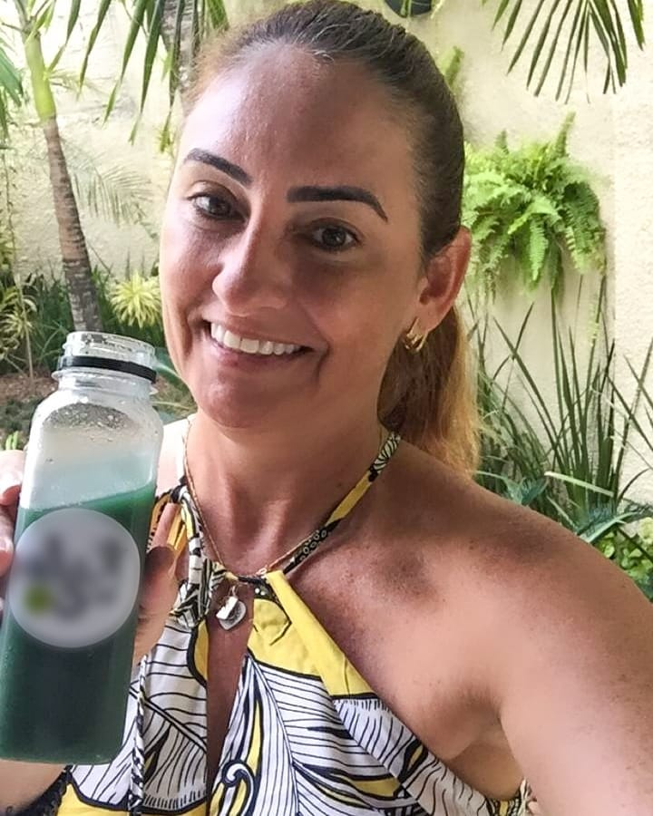
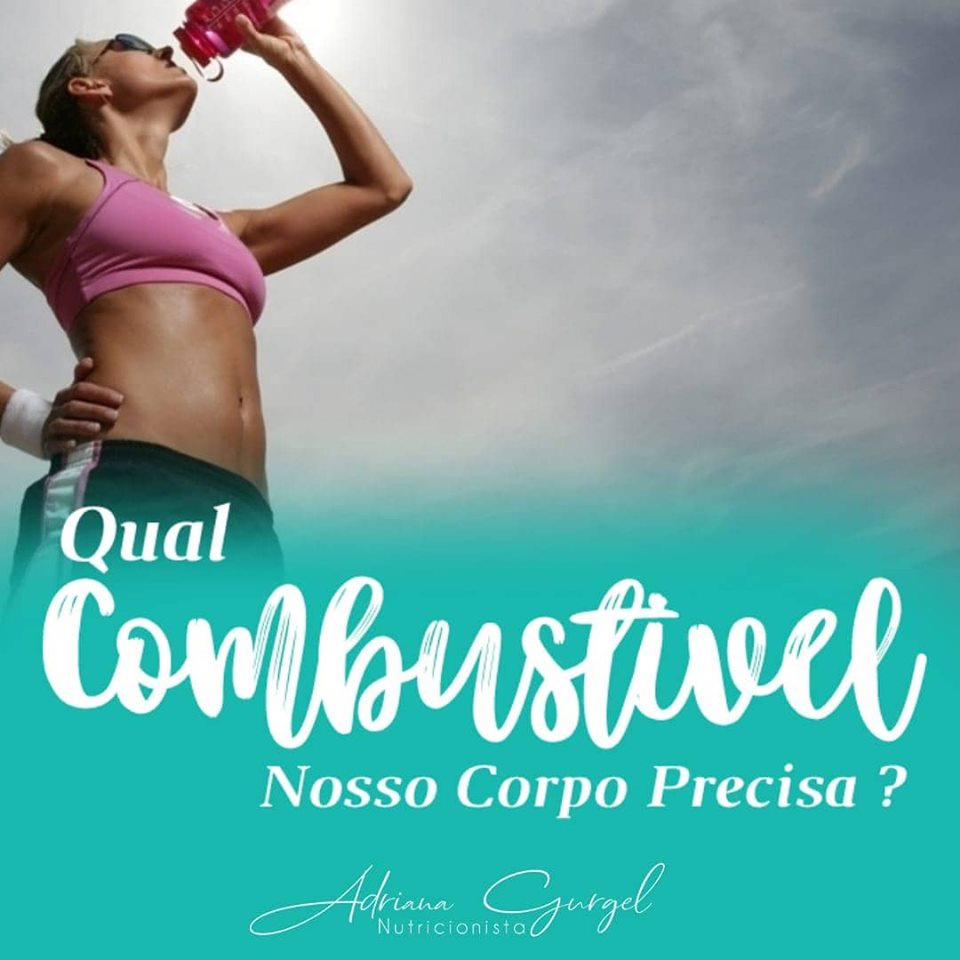
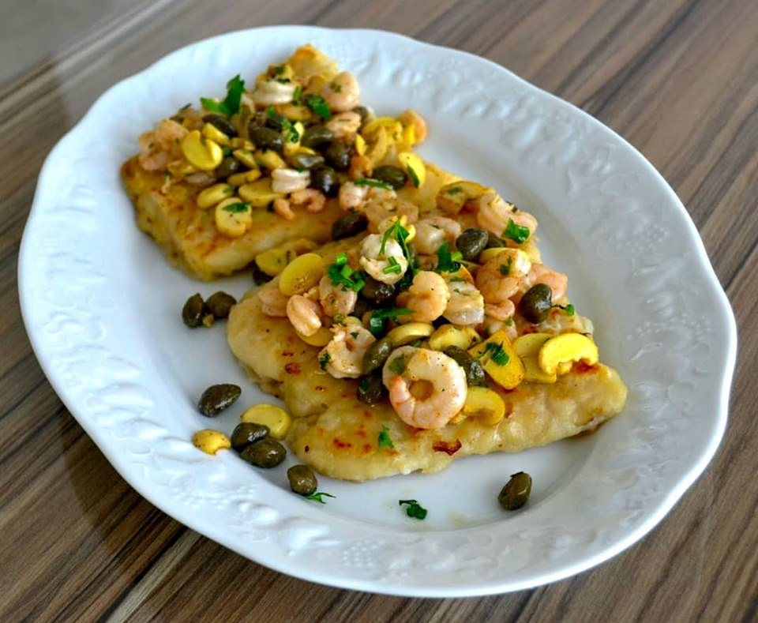

Adriana Gurgel
Nutricionista
- Emagrecimento
- Câncer e Auto Imune
- Performance Mental
- Esporte
 | Publicações Instagram
| Publicações Instagram



Adriana Gurgel
Nutricionista
Quem sou eu...
Sou formada em Nutrição, pós graduada em Nutrição Funcional e Fitoterapia Funcional, pós graduanda em Nutrição Esportiva, e
estudante de Genética na Nutrição e Biohanking.
Sou também praticante de esportes e amante de corrida de montanha e natação, o que me
direcionou para a Nutrição Esportiva.
Além disso, sou nutricionista do América Futebol Clube. Atuo com atletas de alta performance e na área de
emagrecimento, oncologia, doenças auto-imune e síndrome metabólica.
Adriana Gurgel
Nutricionista
Quem sou eu...
Sou formada em Nutrição, pós graduada em Nutrição Funcional e Fitoterapia Funcional, pós graduanda em Nutrição Esportiva, e
estudante de Genética na Nutrição e Biohanking.
Sou também praticante de esportes e amante de corrida de montanha e natação, o que me
direcionou para a Nutrição Esportiva.
Além disso, sou nutricionista do América Futebol Clube. Atuo com atletas de alta performance e na área de
emagrecimento, oncologia, doenças auto-imune e síndrome metabólica.
| Projeto EmagreSER
É com muita felicidade que recebemos vocês aqui!Esse é um projeto pelo qual tenho muito carinho. Esse projeto na verdade começou há mais de um ano atrás, quando conversava com Cid (Meu Coach de Corridas) sobre esse sonho de montar um grupo para falar do emagrecimento linkando com a mentalidade. E a execução do sonho veio depois que contratei o Yago como Life Coach, daí eu parei apenas de ser uma pessoa que tinha excelentes ideias, para aquela que realmente põe em prática. E no final, espero podermos ter ajudado a todos vocês a ter o sentimento de satisfação por ter aprendido o poder de mudar o próprio corpo e conseguir alcançar cada um o seu objetivo, ou pelo menos, estarem no caminho para isso... Cada muito obrigado, cada isso mudou a minha vida , cada feedback dos meus pacientes, me trouxe a colocar em prática esse sonho de montar o grupo EmagreSER.
A lógica do emagrecimento
A ideia sobre entender a lógica do emagrecimento é que uma vez compreendido isso, você seja capaz de por exemplo: olhar pra diferentes estratégias de emagrecimento e entender o porquê ela funciona. Eu quero que você entenda o motivo das prescrições de nutricionistas, porque cada uma usa uma dieta diferente. Entenda a lógica do emagrecimento. Para isso, quero que você entenda que o emagrecimento ocorre com a utilização dos seus estoques de energia (glicogênio muscular e tecido gorduroso), tecnicamente é quando o tecido gorduroso está sendo prioridade para gerar energia é quando acontece o emagrecimento. Então, em termos de fisiologia o emagrecimento acontece quando estamos no “estado não alimentado”, é tão simples quanto isso: se eu não estou comendo, meu corpo está sendo abastecido por toda energia que está nos meus estoques. As principais características de um “estado não alimentado” é: Baixos Níveis de Insulina e Restrição Calórica, e quando o nutri combina estas duas características ele faz uma DIETA.A lógica do emagrecimento pt.2
Vou falar sobre duas dietas bastante conhecidas que focam em um dos estados não alimentados: 1."Dieta de ATKINS": A conhecida dieta da proteína em que as pessoas inclusive acabavam comendo muita carne, queijo, ovo... nessa dieta o foco é deixar a insulina baixa, aquela dieta que as vezes peca porque diz desde que não tenha nada de carboidrato você pode comer à vontade. O que não é certo e não vai dar resultado a longo prazo, apenas no início. 2."Dieta dos pontos": É a dieta que desde que não ultrapasse os pontos, você pode comer qualquer coisa, focada na restrição calórica. Agora, quase todas as dietas para emagrecimento focam nesses estados não alimentado, mas : QUANDO A MAIORIA DÁ ERRADO????? Vai dar errado quando a dieta foca é apenas em um dos estados não alimentados e esquecer do outro. Porque quando foca apenas desde que a insulina esteja baixa eu posso comer à vontade, ela tá errando na questão da restrição calórica, então, vai dar um resultado no começo, mas depois isso claramente vai deixar de dar resultado, porque não tem como justificar para o corpo uma entrada de tanta calorias acima da necessidade mesmo com a insulina baixa, para onde é que vai essa comida?. A mesma coisa quando foca apenas na restrição calórica porque do ponto de vista comportamental não vai funcionar. Tudo que é uma necessidade do corpo que a gente restringi em algum momento vamos fazer compensação.A escolha da estratégia
O que o nutricionista leva em conta ao escolher sua estratégia? Se é melhor Low Carb, Cetogênica, hipocalórica, normocalórica, jejum intermitente, dieta flexível, dieta paleolítica... :- História prévia do emagrecimento
- Se o paciente já engordou e emagreceu muitas vezes, se ela vive em efeito sanfona tem algo importante a considerar: Por que? Será que é comportamental? Faz restrições severas demais e compensa depois? Descontrole hormonal?
- Alimentação atual (recordatório)
- Presença de DCNT (diabetes, síndrome do ovário policistico, hipercolesterolemia, resistência a insulina)
- Presença de transtorno alimentar (ansiedade, compulsão alimentar)
- Nível de atividade
- Preferências alimentares
- Possibilidades alimentares